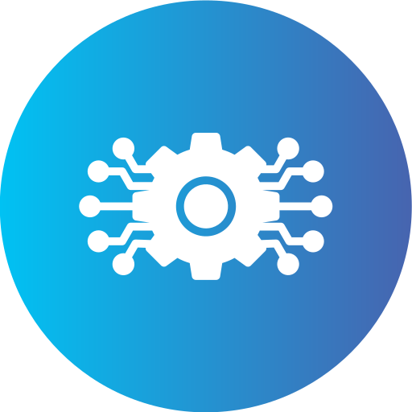
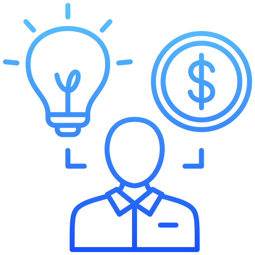
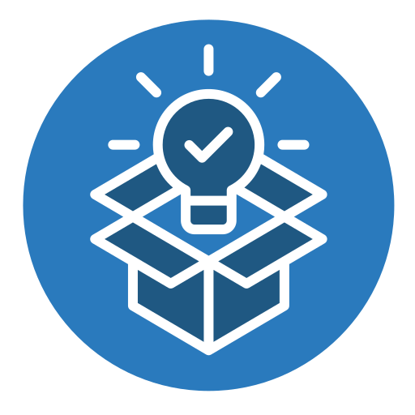

Decouvrez le programme
| Heure | Session | Intervenats | Salle |
|---|---|---|---|
| 09h-00 | Ouverture de la conference | Mamadou Wade | En Ligne |
| 10h-00 | L'avenir du numerique | Mamadou Wade | En Ligne |
| 12h-00 | Le marche du Tech | Olivia Garcia | En Ligne |
| 13h-00 | Entreprenariat | Olivia Garcia | En Ligne |
| 15h-00 | Innovation | Mamadou Wade | En Ligne |
| Heure | Session | Intervenats | Salle |
|---|---|---|---|
| 09h-00 | Competence numerique | Djanokho Timera | En Ligne |
| 10h-00 | Developpement dans le digital | Djanokho Timera | En Ligne |
| 12h-00 | Echanges entre experts | Fatimatou Kindera | En Ligne |
| 13h-00 | Presentation des Themes | Fatimatou Kindera | En Ligne |
| 15h-00 | networking | Djanokho Timera | En Ligne |
| Heure | Session | Intervenats | Salle |
|---|---|---|---|
| 09h-00 | Presentation de Projet | Mamadou Wade | En Ligne |
| 10h-00 | Opportunites | Olivia Garcia | En Ligne |
| 12h-00 | Question- Reponse | atimatou Kindera | En Ligne |
| 13h-00 | Question- Reponse | Djanokho Timera | En Ligne |
| 15h-00 | Fermeture de la conference | Mamadou Wade | En Ligne |
THÉMATIQUES

L'avenir du numerique en Afrique
Un regard sur les tendances du numerique pour le developpement de l'Afrique.

L'intelligence artificielle et son impact
Comprendre les effets de l'intelligence artificielle sur notre societe.

Entreprenariat
Decouvrir les cles pour developper un projet innovant

Innovation et transformation
Decouvrir les technologies et les idees qui accelerent la transformation digitale.